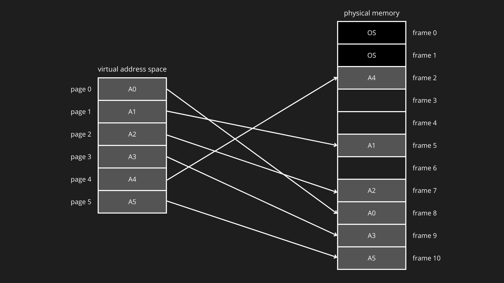
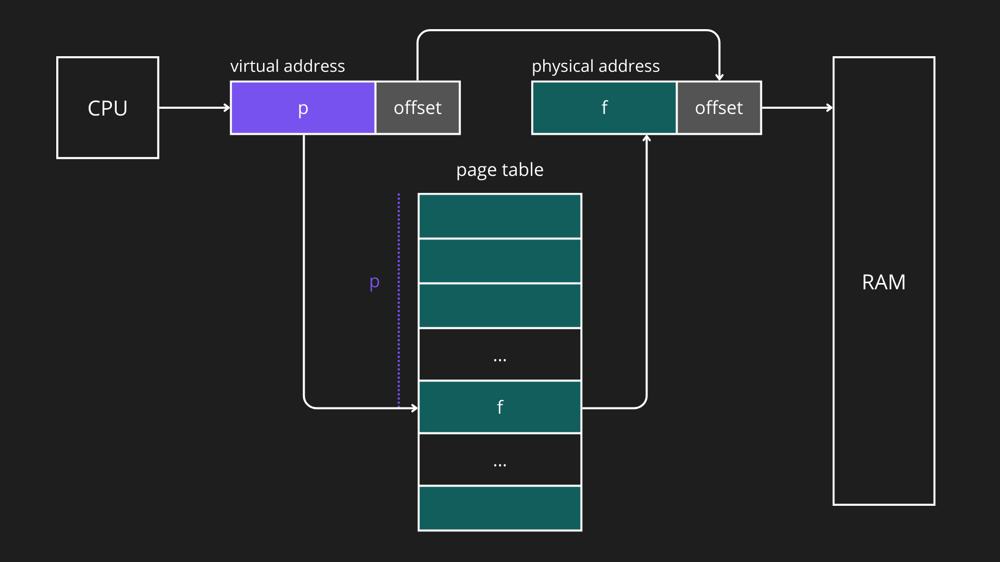
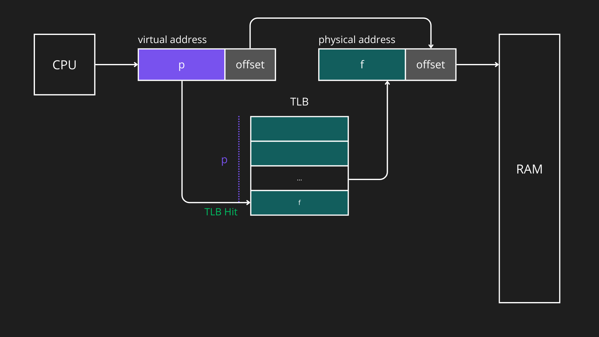
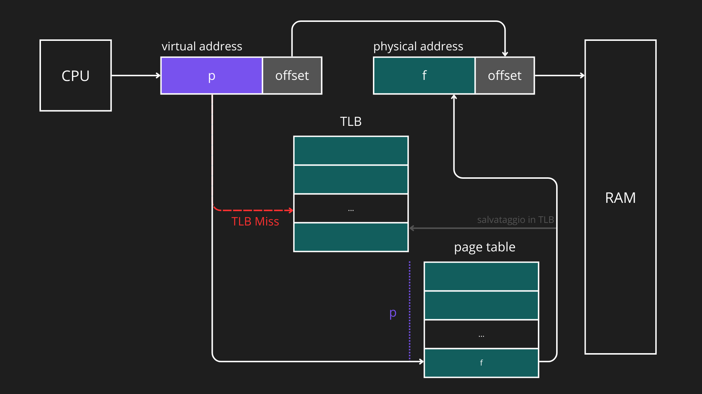
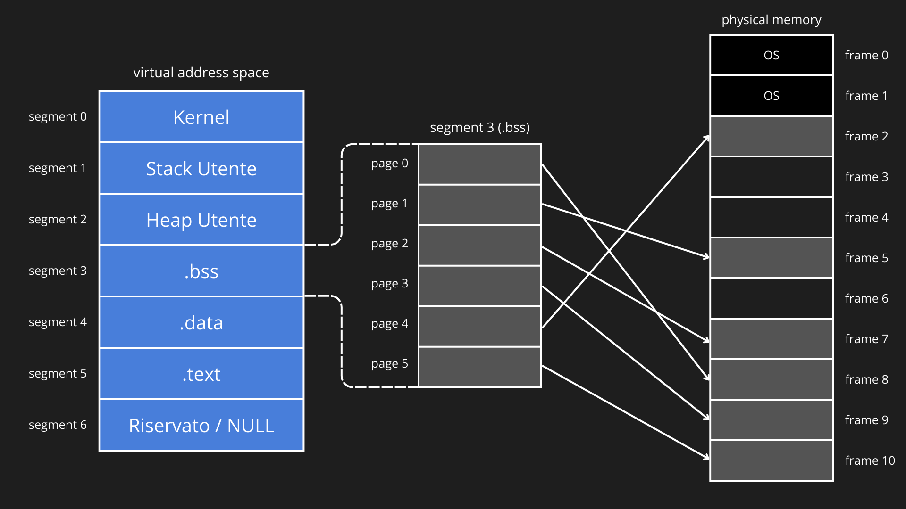
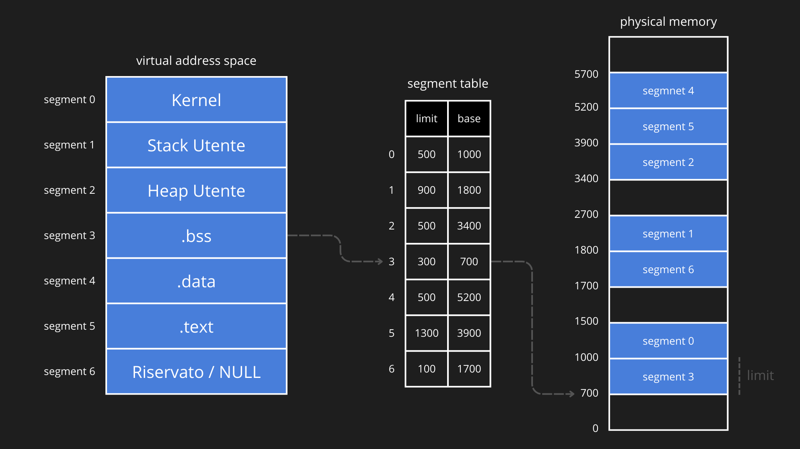
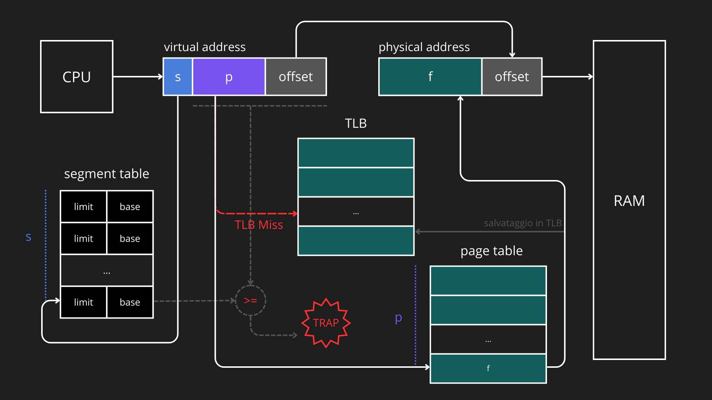
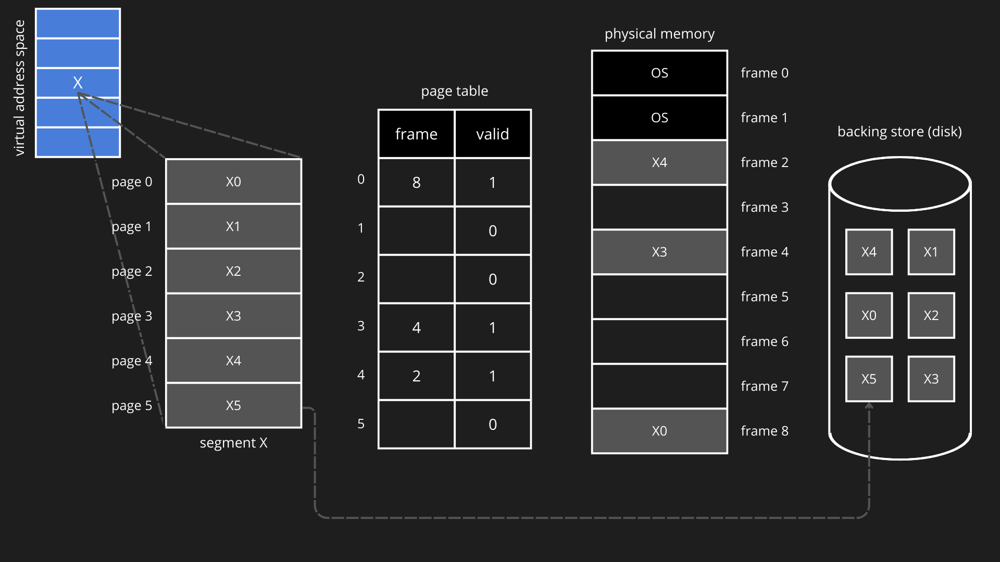

La paginazione è una tecnica di gestione della memoria che elimina la necessità di allocare spazio contiguo ai processi. La memoria logica (memoria virtuale) di un processo viene suddivisa in pagine (pages) di dimensione fissa, mentre la memoria fisica (RAM) è suddivisa in frame della stessa dimensione. Ogni pagina può essere collocata in un qualunque frame libero della memoria fisica. Prendendo per esempio la mappatura di un processo A:

PAGE TABLE
La corrispondenza tra pagine logiche e frame fisici è mantenuta dal sistema operativo tramite una tabella delle pagine (page table). Durante l’esecuzione, la CPU genera un indirizzo logico composto da numero di pagina virtuale (p) e offset. La MMU utilizza la page table per tradurre il numero di pagina nel frame fisico corretto, mantenendo invariato l’offset. Analogamente a quelli logici, ogni indirizzo fisico è costituito da un numero di frame (f) e da un offset relativo all’inizio del frame.

Esempi di indirizzo logico di indirizzo fisico:
In architettura a 32 bit con pagine da 4 KB (2¹²):
- I 12 bit meno significativi sono l’offset dentro la pagina o il frame
- I 20 bit più significativi sono il numero della pagina o del frame
Indirizzo logico: 0xABCD1234
Binario: 1010 1011 1100 1101 0001 0010 0011 0100
|-----------------------|-------------|
#page offsetIndirizzo fisico: 0x00567234
Binario: 0000 0000 0101 0110 0111 0010 0011 0100
|-----------------------|-------------|
#frame offsetN.B. L’offset tra due indirizzi associati è lo stesso.
TRANSLATION LOOKASIDE BUFFER
La Translation Lookaside Buffer (TLB) è una cache ad alta velocità utilizzata per memorizzare le traduzioni più recenti o più frequenti tra numero di pagina virtuale e numero di frame fisico, riducendo i tempi di accesso rispetto a una consultazione completa della page table. Essendo più veloce ma più piccola della memoria principale, la TLB contiene solo una parte delle entry della page table. Quando la CPU genera un indirizzo virtuale, la MMU controlla prima la TLB:
- TLB hit: il frame fisico corrispondente viene restituito immediatamente.
- TLB miss: la traduzione viene cercata nella page table, e la corrispondente entry viene caricata nella TLB per future traduzioni.


La TLB può essere condivisa tra più processi, quindi lo stesso numero di pagina virtuale può corrispondere a frame fisici diversi a seconda del processo richiedente. Questo meccanismo migliora significativamente le prestazioni della memoria virtuale, riducendo il numero di accessi lenti alla page table in RAM.
PAGINAZIONE SEGMENTATA
La paginazione segmentata è una tecnica di gestione della memoria che combina i concetti di segmentazione logica e paginazione fisica: la memoria virtuale di un processo è innanzitutto suddivisa in pagine di dimensione fissa, che costituiscono l’unità elementare di allocazione e traduzione degli indirizzi. Queste pagine vengono poi raggruppate in segmenti logici, ciascuno dedicato a una funzione specifica del programma (codice, dati, heap, stack).

In questo modello la segmentazione fornisce la struttura logica dello spazio di indirizzamento, mentre la paginazione gestisce l’effettiva mappatura delle pagine sui frame fisici, combinando flessibilità, protezione ed efficienza. Di conseguenza, ogni processo possiede una segment table che contiene informazioni su ciascun segmento: indirizzo iniziale (base), lunghezza (limit) e permessi di accesso. La segment table serve a verificare se il segmento richiesto esiste e se l’accesso è valido, non a memorizzare direttamente le pagine. Inoltre, ogni segmento in memoria virtuale possiede una page table, che mappa tutte le pagine comprese nel segmento ai rispettivi frame fisici in RAM.

L’indice del segmento in memoria virtuale viene utilizzato per leggere la segment table: Se il segmento è valido, il numero di pagina viene usato per accedere alla page table del segmento. La page table dunque mappa la pagina virtuale sul frame fisico corrispondente in RAM e l’offset viene aggiunto al frame fisico per ottenere l’indirizzo fisico finale. Se il segmento o la pagina non sono presenti in RAM, si genera una trap: il sistema operativo deve caricare la pagina dal disco (backing store) o gestire errori di protezione.

Esempi di indirizzo logico e di indirizzo fisico (paginazione segmentata):
In architettura a 32 bit con pagine da 4 KB (2¹²):
- I 12 bit meno significativi sono l’offset all’interno del frame
- I 16 bit centrali sono il numero di pagina all’interno del segmento
- I 4 bit più significativi sono il numero di segmento
Indirizzo logico: 0xABCD1234
Binario: 1010 1011 1100 1101 0001 0010 0011 0100
|---|-------------------|-------------|
#s #page offsetIndirizzo fisico: 0x00567234
Binario: 0000 0000 0101 0110 0111 0010 0011 0100
|-----------------------|-------------|
#frame offsetN.B. L’offset tra indirizzo logico e indirizzo fisico rimane invariato anche nel caso di paginazione segmentata.
DEMAND PAGING
Nei sistemi moderni, le pagine di un processo sono sempre memorizzate su disco e non vengono caricate preventivamente in memoria principale, ma solo quando vengono effettivamente referenziate. Infatti, al momento dell’avvio di un processo, nessuna (o quasi nessuna) delle sue pagine risiede in RAM e il loro caricamento avviene in modo incrementale tramite i page fault. Questa tecnica, chiamata demand paging, consente:
- riduzione dell’uso di memoria fisica,
- maggiore multiprogrammazione,
- avvio più rapido dei processi.
Valid bit
Nel demand paging, la page table deve contenere più informazioni rispetto al paging tradizionale. Per ogni pagina sono presenti:
- Numero di frame: valido solo se la pagina è residente
- Bit di presenza (valid bit):
1se la pagina è in memoria principale,0se la pagina è su disco - Bit di riferimento (reference bit): indica se la pagina è stata usata recentemente
- Bit di modifica (dirty bit): indica se la pagina è stata modificata
- Informazioni sulla posizione su disco della pagina
Il valid bit è fondamentale: una pagina può appartenere allo spazio logico del processo e allo stesso tempo non essere caricata fisicamente in RAM:

Lo schema trascura la TLB, che mantiene il comportamento e la funzione visti ne paragrafi precedenti, con la semplice aggiunta del valid bit (come per la page table).
Accesso alla memoria e page fault trap
Anche la TLB deve contenere un valid bit per ogni entry. Durante la traduzione dell’indirizzo la MMU consulta sempre la TLB e la page table. Il comportamento è il seguente:
- In caso di TLB hit + pagina già in memoria principale: accesso immediato.
- In caso di TLB miss + pagina già in memoria principale: consultazione della page table (come visto sopra) e aggiornamento della TLB (comportamento normale).
- In caso di pagina non in memoria principale (con o senza TLB hit): l’hardware genera una page fault trap verso il sistema operativo (che la gestisce).
- Dopo la gestione del fault, la TLB viene aggiornata e l’istruzione rieseguita.
N.B. In questo caso il TLB migliora le prestazioni solo quando la pagina è già residente; in caso di page fault il suo contributo è trascurabile rispetto al costo del disco.
Tempo di accesso medio alla memoria
Quando un processo esegue un’istruzione che richiede l’accesso alla memoria, il tempo impiegato può variare a seconda che la pagina richiesta sia presente in memoria o debba essere caricata da disco. Per tenere conto di questa variabilità, definiamo il tempo medio di accesso alla memoria per istruzione come segue. Dati:
- tMA : tempo impiegato per un accesso alla memoria fisica
- tFAULT : tempo impiegato per la gestione di un page fault
- p ∈ [0, 1] : probabilità che si verifichi un page fault
Il tempo medio di accesso alla memoria è dato da:
N.B. p è una probabilità empirica che riflette quanto spesso un processo tenta di accedere a una pagina non residente. Non si sceglie arbitrariamente, ma si stima in base al working set (insieme delle pagine che il processo sta utilizzando) e alla memoria disponibile.
Gestione del page fault
La gestione di un page fault avviene quando un processo tenta di accedere a una pagina che appartiene al suo spazio di indirizzamento logico ma non è attualmente residente in memoria principale. Una volta generato un page fault il sistema operativo lo gestisce nel seguente modo:
1. Salvataggio del contesto del processo
Il sistema operativo:
- sospende l’esecuzione del processo che ha causato il fault,
- salva il suo stato (registri, program counter, ecc.), così da poter riprendere correttamente l’esecuzione in seguito.
2. Verifica di validità dell’accesso
L’OS controlla se l’accesso è legittimo: se la pagina non appartiene allo spazio di indirizzamento del processo genera un errore (segmentation fault / abort) e il page fault non può essere gestito.
3. Selezione di un frame in memoria
Quando si verifica un page fault e la pagina richiesta deve essere caricata dal disco, il sistema operativo deve individuare un frame in memoria principale in cui collocarla.
- Se esiste un frame libero, esso viene utilizzato direttamente.
- Se la memoria fisica è piena, è necessario selezionare una pagina vittima da rimuovere, tramite un algoritmo di rimpiazzo delle pagine.
N.B. Se la pagina vittima ha il dirty bit impostato a 1, significa che è stata modificata rispetto alla copia su disco e deve quindi essere scritta (aggiornata) su disco prima della rimozione.
Algoritmi di rimpiazzo delle pagine:
Rimpiazzo casuale (Random)
Una pagina viene rimossa in modo casuale. È semplice da implementare, ma non sfrutta alcuna informazione sui riferimenti passati ed è generalmente poco efficiente.
FIFO (First In First Out)
Viene rimossa la pagina che si trova in memoria da più tempo. L’algoritmo è semplice, ma può rimuovere pagine ancora molto utilizzate.
MIN (OPT)
Viene rimossa la pagina che non verrà utilizzata per il periodo di tempo più lungo nel futuro.
È l’algoritmo ottimale dal punto di vista teorico, ma difficilmente implementabile nella pratica, poiché richiede la conoscenza futura dei riferimenti.
LRU (Least Recently Used)
Viene rimossa la pagina non utilizzata da più tempo. È uno degli algoritmi più efficaci e si basa sul principio di località, ma non è facilmente implementabile in modo esatto per questo viene approssimato tramite diverse tecniche:
LRU con singolo bit di riferimento:
Per ogni pagina viene mantenuto un bit di riferimento:
- inizialmente impostato a 0,
- impostato a 1 quando la pagina viene referenziata.
Durante il rimpiazzo, viene selezionata una delle pagine con bit a 0, poiché considerate non recentemente utilizzate.
LRU con più bit di riferimento:
Per ogni pagina vengono mantenuti più bit (tipicamente 8):
- a ogni colpo di clock i bit vengono shiftati a destra,
- il bit più significativo viene impostato a 1 se la pagina è stata referenziata.
La pagina con il valore binario più basso viene considerata la meno recentemente usata e viene rimossa.
LRU con algoritmo di Second Chance:
È una combinazione di FIFO e bit di riferimento.
- I frame sono organizzati in una lista FIFO circolare.
- Ogni pagina ha un bit di riferimento.
- Durante un page fault: se il bit è 0, la pagina viene rimossa. Se il bit è 1, viene azzerato e la pagina ottiene una “seconda chance”, passando al frame successivo.
Second Chance avanzato (Reference + Dirty bit)
In questa variante, ogni pagina è classificata in base a:
- bit di riferimento (R),
- bit di modifica (M).
Le pagine vengono suddivise in quattro categorie:
- (R=0, M=0): non usata recentemente, non modificata
- (R=0, M=1): non usata recentemente, modificata
- (R=1, M=0): usata recentemente, non modificata
- (R=1, M=1): usata recentemente, modificata
Durante il rimpiazzo, l’OS seleziona la prima pagina appartenente alla categoria più bassa disponibile, privilegiando quelle che non richiedono scrittura su disco.
4. Caricamento della pagina dal disco
L’OS, una volta individuato il frame vittima di destinazione:
- avvia un’operazione di I/O su disco per leggere la pagina richiesta,
- pone il processo in stato di attesa (blocked),
- assegna la CPU a un altro processo pronto.
Questa fase è la più costosa in termini di tempo.
5. Aggiornamento delle strutture dati
Al termine dell’I/O:
- la pagina è caricata nel frame selezionato;
- l’OS aggiorna la page table: numero del frame vittima, valid impostato a
1, reset dei bit di riferimento/modifica se necessario; - eventuali entry obsolete nella TLB vengono invalidate o aggiornate.
6. Ripresa dell’esecuzione
Infine il processo viene riportato nello stato di ready e quando viene nuovamente schedulato, l’istruzione che aveva causato il page fault viene rieseguita (se idempotente). Questa volta la traduzione dell’indirizzo va a buon fine (pagina in RAM) e l’accesso alla memoria viene completato.
Un’istruzione idempotente è un’istruzione che, anche se interrotta e rieseguita una o più volte, produce lo stesso effetto sullo stato del sistema di una singola esecuzione. Questa proprietà è fondamentale nella gestione dei page fault, perché l’istruzione che ha causato il fault viene rieseguita dopo il caricamento della pagina in memoria: l’idempotenza garantisce che la riesecuzione non produca effetti collaterali indesiderati (come duplicazioni di scritture o aggiornamenti incoerenti dello stato del processo).